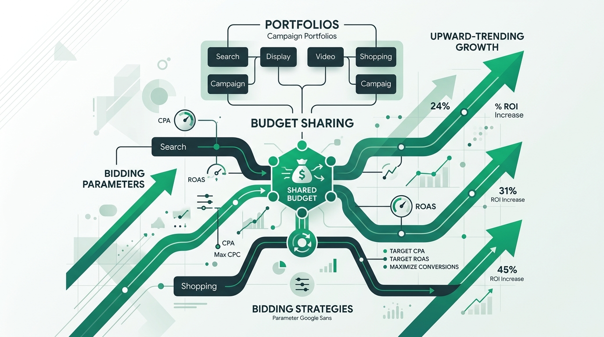

In enterprise-level paid search management, scaling performance across multiple campaigns is one of the hardest puzzles to solve. Google Ads' default setting forces you to optimize bids campaign by campaign, which often leaves smaller budget campaigns starving for conversion data. The secret to unlocking stable performance across these accounts is using **Portfolio Bidding Strategies**.
A portfolio bidding strategy is a shared, automated bid strategy that groups multiple campaigns together. Instead of bidding in isolation, campaigns in a portfolio pool their data, helping Google's machine learning make smarter, faster bid decisions. Let's break down how this strategy works, when to use it, and how it protects your ad budget from inflated click costs.
1. Data Aggregation: Bypassing Smart Bidding Thresholds
Google's Smart Bidding (Target CPA, Target ROAS) relies on historical conversion data to predict the likelihood of a conversion. If a campaign gets fewer than 30 conversions a month, the algorithm struggles to optimize accurately, resulting in volatile performance.
By grouping 5 smaller campaigns under a single Portfolio Bidding Strategy, you pool their conversion data. Google now sees the combined total of 150 conversions a month, allowing the smart bidding engine to transition out of the learning phase quickly and make much more stable, accurate bid adjustments across all grouped campaigns.
2. Shared Budgets and Bid Stabilization
When campaigns run on separate daily budgets, some campaigns may hit their budget limits early in the day while others have leftover budget. By combining a Portfolio Bidding Strategy with a **Shared Budget**, you allow Google to dynamically shift budget to the campaign showing the highest conversion potential at any given hour, maximizing total account conversions.
3. Setting Max CPC Bid Limits on Smart Bidding
One of the biggest dangers of standard Smart Bidding is that Google is allowed to bid any amount it deems necessary to secure a conversion. In highly competitive auctions, this can lead to Google bidding $50 or $100 for a single click, draining your daily budget instantly.
When you set up a Portfolio Bidding Strategy, Google unlocks **Advanced Settings** that are hidden at the individual campaign level. The most important of these settings is the **Maximum Bid Limit (Max CPC)**. By setting a Max CPC limit of $10 on your portfolio, you tell Google's algorithm to bid dynamically up to that threshold, but never to exceed it. This single setting prevents CPC inflation and protects your margins.
Summary & Actionable Playbook
To implement this, navigate to your Tools and Settings in Google Ads, select Bid Strategies, and create a new Portfolio strategy. Group campaigns that share similar conversion actions and target ROAS goals. Make sure to set a conservative Maximum Bid limit based on your historical average CPCs. Monitor for 14 days without editing to allow the algorithm to stabilize.
Frequently Asked Questions
What is a Portfolio Bidding Strategy in Google Ads?
A portfolio bidding strategy groups multiple Google Ads campaigns under a single shared bid target (like Target ROAS or Target CPA), pooling conversion data to accelerate machine learning and allowing shared bidding parameters.
Why should I use a Portfolio Bidding Strategy?
It helps aggregate conversion data from lower-volume campaigns to bypass Google's smart bidding thresholds, stabilizes bidding fluctuations, and allows you to set max CPC bid limits to control ad spend inflation.
Can I set a maximum CPC bid limit on smart bidding?
Yes, by using a Portfolio Bidding Strategy, you can access advanced settings that let you set a Max CPC bid limit, preventing Google's smart bidding from overpaying for individual clicks during competitive auctions.